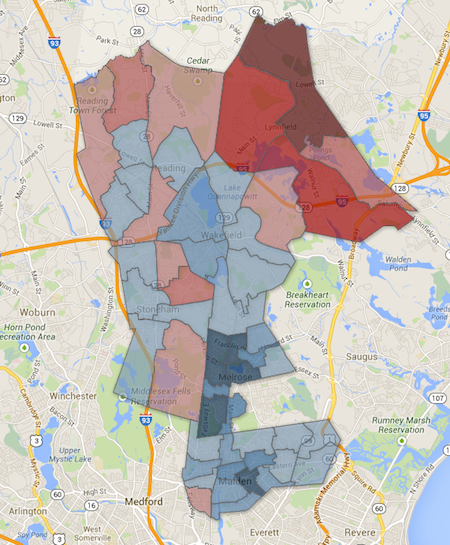
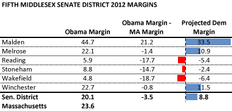
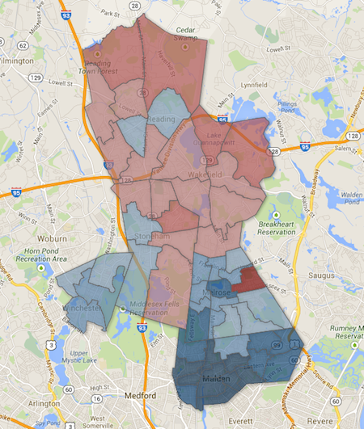

Fifth Middlesex Senate seat likely to remain blue
Originally published on the Mass. Numbers Blogger site on 2014-03-09.
On Tuesday, March 4, Winchester State Representative Jason Lewis won the Democratic special state primary for the 5th Middlesex State Senate seat, which had previously been held by Congresswoman Katherine Clark. Lewis will face Melrose Republican and Alderman-at-Large Monica Medeiros in the general election—all signs point towards a win by Representative Lewis on April 1.
That is not to say the 5th Middlesex Senate District is a bastion of liberalism. A strong GOP candidate who out-worked and out-raised a Democratic candidate could very well take this seat. However, the lean of the district has moved to the left since it was held by GOP State Senator Richard Tisei, Lewis showed strength in the Democratic primary, and Lewis shows no signs of being out-worked or out-raised.
Much of the pushback on my piece predicting a win by Lewis in the primary and in the general was based on an assertion that the district has a Republican lean and that the previous incarnation of the district was help by Republican Richard Tisei for 20 years. I would like to present some specifics about district’s shift to the left in the 2011 redistricting that makes it a tougher win for the GOP.
The Middlesex and Essex District
Congresswoman Clark was originally elected to the State Senate in the Middlesex and Essex State Senate District, the previous incarnation of the 5th Middlesex. Clark was elected to replace Republican Richard Tisei who had served the district for 20 years and who left to run for Lieutenant Governor as Charlie Baker’s running mate in 2010.
Before redistricting, the Middlesex and Essex State Senate District consisted of Lynnfield, Malden, Wards 1 through 5 of Melrose, Reading, Stoneham, and Wakefield. We can look at the 2008 performance of President Obama in the precincts of the district to see how they compare to the rest of Massachusetts. The first column shows President Obama’s 2008 margin in district precincts in each of the municipalities; the second column subtract’s Obama’s statewide margin, normalizing it for the Commonwealth; and the last column shows Katherine Clark’s margin against Republican Craig Spadafora in the 2010 election to replace Tisei.

Lynnfield is one of the most Republican towns in Massachusetts. Reading, Stoneham, and Wakefield are split between more liberal and more conservative precincts. Melrose could be considered about average for the Commonwealth, and Malden is fairly liberal. The district as a whole had an Obama margin of 18.7, which was 7.7 points below the state average of 26.4 points.
In 2010 Clark outperformed Obama in her hometown of Melrose and came out 4.6 points above her Republican opponent Craig Spadafora district-wide. Clark’s 4.6 point margin was 12.3 points above the normalized district score of -7.7, a margin we can project into the new district to judge how a Democrat might fair post-redistricting.
Middlesex and Essex precinct-by-precinct Clark margins
(click map for interactive version)
The interactive version of this map was built with Google Fusion Tables, which Google shut down on 3 December 2019. Only the static image survives.

The Lynnfield portion of the map is the darkest red—Clark lost Precinct 4 of Lynnfield by a whopping 35 points. Clark lost Reading and Stoneham by small margins, and won the remaining municipalities.
Redistricting and the new 5th Middlesex Senate District
Each of the United States are required to redraw election district boundaries every 10 years based on population changes shown by the U.S. Census. A holistic view of Massachusetts redistricting shows few signs of gerrymandering, but population shifts did require changes making some districts more conservative, and some more liberal. The Middlesex and Essex State Senate District lost all of Lynnfield, its most conservative piece, and picked up more liberal precincts in the remainder of Melrose and half of Winchester, and was renamed the 5th Middlesex.
While Katherine Clark did not have an opponent in the first post-redistricting election in November 2012, we can look at President Obama’s performance in the 5th Middlesex compared to the state average to evaluate the changes. The Projected Dem Margin column in the chart adds Clark’s 2010 12.3 point differential to Obama’s normalized performance, giving an idea how a strong Democratic candidate might fare.

In 2012 President Obama’s Massachusetts statewide margin was down to 23.6 points (from 2008’s 26.4 points). The 5th Middlesex redistricting added more precincts close to the statewide average—the rest of Melrose and half of Winchester—bringing the district’s Obama margin within 3.5 points of the quite-liberal state average. A simple projection of Clark’s 12.3 points above the state average gives a ballpark of a Democratic win of 8.8 points for the district, while projecting Democratic losses in Reading, Stoneham, and Wakefield.
It is unlikely that this projection will be realized exactly, resulting in an 8.8 point win by Rep. Lewis. However, the 4.2 point difference between the Middlesex and Essex District’s score of -7.7 and the 5th Middlesex District’s score of -3.5 can be seen as an approximate measure of the district’s move to the left in redistricting.
Had Clark not run for Congress, she would have greatly benefited from the additional precincts in her hometown of Melrose (in addition to the loss of conservative Lynnfield). GOP candidate Monica Medeiros is from Melrose and will likely benefit from having all of her home town in the district. Jason Lewis is likely to get a hometown boost and perform on par with Obama in Winchester.
The following map leaves out these municipality-specific differences and simply gives the precinct-by-precinct projection based on Obama’s performance, giving a feel for a generic Democrat’s performance in each precinct. While the map contains a lot of red, it will be hard for the GOP to overcome the deep blue of Malden, the left-leaning precincts in Melrose, Winchester, Stoneham, and Reading. One recipe for a Medeiros win would be to win her hometown of Melrose and hold down Lewis’s margins in Malden.
5th Middlesex precinct-by-precinct projected margins
(click map for interactive version)
The interactive version of this map was built with Google Fusion Tables, which Google shut down on 3 December 2019. Only the static image survives.

The 5th Middlesex State Senate seat will be won by the candidate who does the best of job of connecting with voters in the next few weeks and getting them to the polls on April 1st. The electoral makeup of the district makes this a readily manageable task for the well-organized Rep. Lewis.